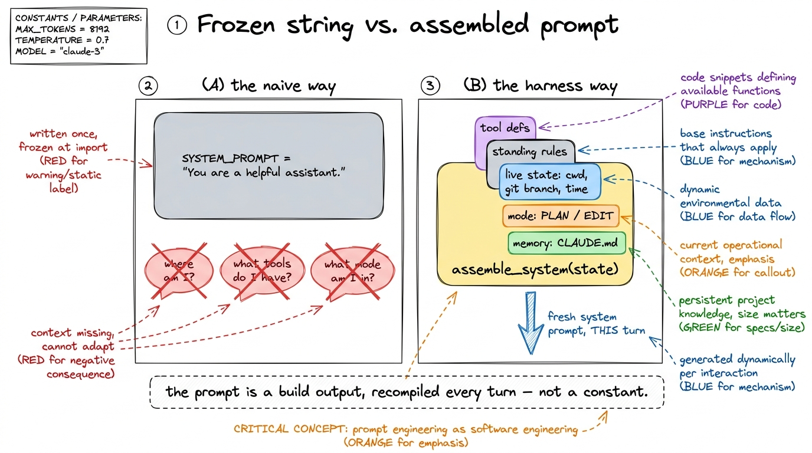
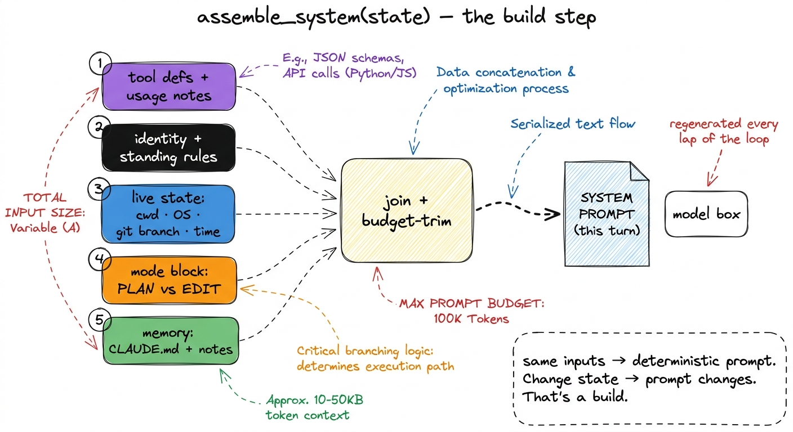
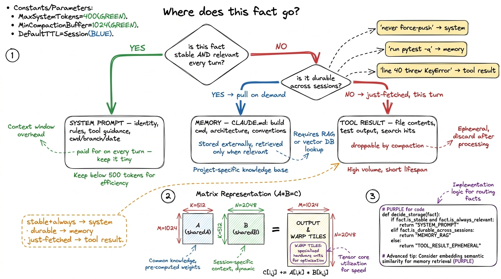
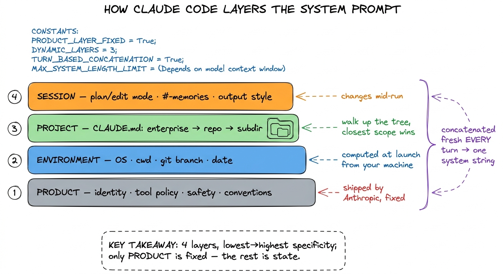
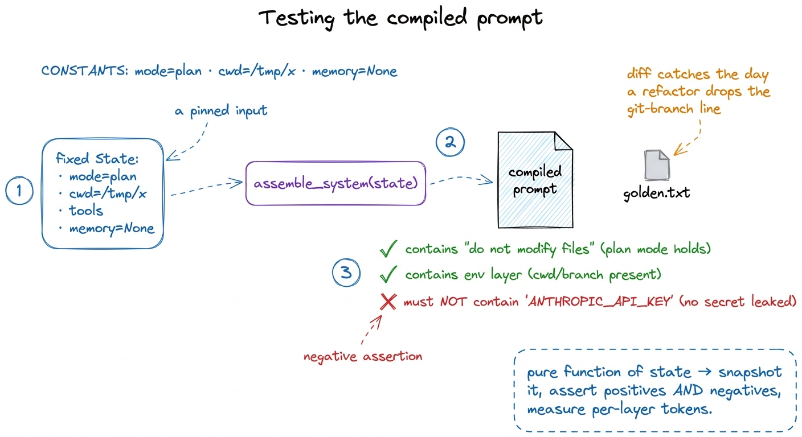

System prompts as infrastructure, not prose
Open the source of almost any "how to prompt" tutorial and you will find the system prompt treated as a little block of personality: "You are a helpful, expert coding assistant. Be concise. Do not apologize." Written once, pasted into a constant, never touched again. For a chatbot that answers one question, that is fine. For a harness that runs two hundred turns across a real codebase, it is a category error — and spotting why is the first real move in context engineering.
Here is the shift I want you to make. In a harness, the system prompt is not a string you write. It is an artifact your code assembles, fresh, on every single turn. It is compiled — from tool definitions, standing rules, the current state of the world, the active mode, and whatever the agent has chosen to remember — the same way a build system compiles a binary from source. Once you see it that way, everything about how you treat it changes: you template it, you version it, you test it, and you become very deliberate about what is allowed in.
Let me build up to that view the way we build everything in this book — from the smallest thing that shows the idea.
The naive system prompt, and where it breaks
Back in your first bare harness we passed a constant called SYSTEM_PROMPT straight into the model client. That was honest for a fifteen-line loop. Watch it break the moment the agent does anything real.
SYSTEM_PROMPT = "You are a helpful coding assistant. Be concise."
def call_model(messages, tools):
return client.messages.create(
model="claude-sonnet-4-5",
system=SYSTEM_PROMPT, # the same frozen string, forever
messages=messages,
tools=tools,
)The agent starts in /Users/rajat/project, then cds into a subdirectory to run a test — but SYSTEM_PROMPT still says nothing about where it is, so the model keeps guessing at paths. You add a read_file tool and a run_bash tool, but the prompt never mentions them, so the model under-uses the ones it has and hallucinates ones it doesn't. You want a read-only "planning" phase before any edits — but there is nowhere to say "you are currently in plan mode, do not write" because the string is fixed at import time. Each of these is the same failure: the system prompt needs to know things that are only true at this turn, and a constant cannot.

figure rendering · The naive prompt is a frozen string that can't know the current turn'sSo the first refactor of the whole book is quiet but enormous: replace the constant with a function.
The system prompt is a build step
Instead of a string, we have assemble_system(state) — a function that takes the current state of the agent and returns the system prompt for this turn. The loop calls it every lap, right before it calls the model.
def assemble_system(state):
parts = []
parts.append(IDENTITY_AND_RULES) # 1. who you are, standing constraints
parts.append(render_tool_guidance(state.tools)) # 2. how to use the tools you have
parts.append(render_environment(state)) # 3. live facts: cwd, OS, git branch, date
parts.append(render_mode(state.mode)) # 4. plan-mode / edit-mode toggle
parts.append(render_memory(state.memory)) # 5. project memory (CLAUDE.md, etc.)
return "\n\n".join(p for p in parts if p)def run_agent(user_request, state):
state.messages.append({"role": "user", "content": user_request})
while True:
system = assemble_system(state) # recompiled EVERY turn
reply = call_model(state.messages, state.tools, system=system)
...That single change — system=SYSTEM_PROMPT becomes system=assemble_system(state) — is the doorway into treating the prompt as infrastructure. Because now the prompt is produced by code, every discipline you apply to code applies to it: you can template each render_* piece, version the whole assembler, and write tests that assert the compiled output looks right.1 This is exactly the boundary we drew in prompt vs context vs harness engineering: prompt engineering is what you say in one of those slips; context engineering is deciding which slips get assembled, and how much of the budget each is allowed to spend this turn. The model still just sees a system string — but you now see a pipeline.

figure rendering · The system prompt as a compile step: five ordered, colored inputs areThe real question: system, tool result, or memory?
Now that the prompt is assembled from parts, the interesting engineering is deciding what belongs in it at all. The context window is the scarcest resource in the harness, and the system prompt sits at the top of every turn — a byte you put there is a byte you pay for on all two hundred laps. So there is a real placement decision for every piece of information, and it has three homes.
The system prompt is for what is stable and always relevant. The agent's identity, the non-negotiable rules ("never force-push", "always run the tests before claiming done"), how to use the tools, and a small set of live facts that matter on every turn — the working directory, the OS, the git branch, today's date. These earn their permanent seat because the model needs them whether or not it just did anything.
A tool result is for what is specific and just-fetched. The contents of a file, the output of a test run, the result of a search. This is the mistake beginners make most: stuffing the whole repository, or a file's contents, into the system prompt "so the model always has it." Don't. If the model needs a file, it calls read_file and the contents arrive as a tool_result — present when relevant, and droppable later when compaction needs the room. Pinning it in the system prompt means paying for it on every turn and having no clean way to evict it.
Memory is for what should persist across sessions but be pulled in on demand. The durable facts about this project — the build command, the architecture, the conventions — live in a file like CLAUDE.md, which the assembler renders into the prompt. It is more permanent than a tool result, but it is still data the harness chooses to include, not a hardcoded string. Anthropic's own guidance frames the goal as finding the smallest set of high-signal tokens that maximizes the chance of the outcome you want — every slip in the prompt is competing for that budget, and information that isn't stable-and-always-relevant should be somewhere cheaper.2 A useful smell test: if a fact is true only right now (this file's contents, this error), it is a tool result. If it is true for this project across runs (the test command), it is memory. If it is true for every run of the agent (never force-push), it is the system prompt.

figure rendering · A placement flowchart: stable-and-always-relevant facts go in the systHow Claude Code layers it
None of this is theoretical — it is exactly how the production harnesses build their prompts. Claude Code assembles its system prompt in layers, and reading them top to bottom is a good model for your own assembler.
At the base is the product layer: the identity, the tool-use policy, the safety and refusal rules, the coding conventions — the part Anthropic ships and you don't edit. On top of that the harness injects an environment layer it computes at launch: your operating system, the working directory, the git status, the date — the live facts that let the model reason about paths and commands instead of guessing. Then comes the project layer: the CLAUDE.md files, discovered by walking up from the working directory, so an enterprise root, a repo, and a subfolder can each contribute rules, closest-scope-wins.3 Claude Code also reads a personal ~/.claude/CLAUDE.md for your cross-project preferences, and honors @import lines inside these files. The layering is deliberately hierarchical — the same shape as .gitignore or cascading config — so a monorepo can set org-wide rules once and let a single package refine them. And wrapping all of it is the session layer: the current mode (Claude Code's plan mode literally injects a block forbidding edits), any active # memory the user added mid-session, and the output-style toggle.
┌─ session ── mode (plan/edit), in-session memories, output style
├─ project ── CLAUDE.md files (enterprise → repo → subdir), imports
├─ environment ─ OS, cwd, git branch/status, today's date (computed at launch)
└─ product ── identity, tool policy, safety rules, conventions (shipped, fixed)Four layers, lowest-to-highest specificity, concatenated into one system string every turn — and every layer except the product base is computed by the harness from state. That is the whole thesis in one diagram: a system prompt that is built, not written. pi does the same thing with a smaller, more legible template you can read end to end; Cursor injects the open file and cursor position into its equivalent layer. The names differ; the architecture is the same.

figure rendering · Claude Code's system prompt is four concatenated layers — product, envTreat it like code, because it is
Once the prompt is a build output, the engineering practices write themselves — and skipping them is how harnesses silently rot.
Template it. Each render_* function owns one concern, with the variable facts as parameters. This keeps the pieces composable and, crucially, keeps you from the copy-paste drift where three slightly different environment blocks disagree about the format of the git status.
Version it. The assembler and its templates go in source control, and changes to them go through review like any other code. A one-word edit to a standing rule can swing behavior across every task the agent runs; that deserves a diff and a commit message, not a live tweak to a magic string.
Test it. This is the practice people find surprising and then can't live without. Because assemble_system(state) is a pure function of state, you can snapshot-test the compiled prompt: feed it a fixed state, assert the output matches a golden file, and catch the day a refactor silently drops the git-branch line or the plan-mode block. You can also assert negatives — that a secret in the environment never lands in the prompt, that plan mode really does forbid edits — and you can measure the token cost of each layer so no slip quietly balloons your per-turn bill.
def test_plan_mode_forbids_edits():
state = State(mode="plan", cwd="/tmp/x", tools=TOOLS, memory=None)
system = assemble_system(state)
assert "do not modify files" in system.lower()
assert render_environment(state) in system # env layer present
assert "ANTHROPIC_API_KEY" not in system # no secret leakedA prompt you can test is a prompt you can trust to change. That is the entire reason to stop writing prose and start compiling infrastructure.

figure rendering · Because assemble_system is a pure function of state, you can pin a staWhat this buys you, and what's next
With an assembled prompt, your agent finally knows where it is, what it can do, what mode it's in, and what it has learned about the project — all recomputed to be true this turn, all within a budget you control and can measure. You've turned the most-abused string in the system into a real subsystem.
What it still can't do is decide what to keep when the conversation itself outgrows the window — the system prompt is only the top of the context; the growing message array underneath it is the part that actually blows the budget on a long task. That is the job of compaction and summarization, and it is where context engineering gets genuinely hard. And the project memory we kept hand-waving at — the CLAUDE.md layer — gets its own treatment in memory and CLAUDE.md, where we make the agent start every run already knowing your codebase.